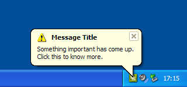

| Home · All Classes · Modules · QSS HELP · QSS 案例 · VER007 HOME |
该QSystemTrayIcon类提供了在系统托盘中的应用程序的图标。More...
继承QObject。
该QSystemTrayIcon类提供了在系统托盘中的应用程序的图标。
现代操作系统通常提供的特殊区域在桌面上，称为system tray or notification area，其中长期运行的应用程序可以显示图标和短消息。

该QSystemTrayIcon类可以在以下平台上使用：
要检查系统托盘是否存在在用户的桌面上，调用QSystemTrayIcon.isSystemTrayAvailable（ ）静态函数。
要添加一个系统托盘项，创建一个QSystemTrayIcon对象，调用setContextMenu（ ）提供的图标的上下文菜单，并调用show（） ，使其在系统托盘中可见。状态通知邮件（ “气球消息” ）可以被使用在任何时间显示showMessage（ ） 。
如果系统托盘不可用时，系统托盘图标的构造，但后来变为可用， QSystemTrayIcon会自动在系统托盘中的应用程序添加一个条目，如果图标visible。
该activated当用户激活的图标（）信号被发射。
只有在X11上，在工具提示的要求， QSystemTrayIcon收到QHelpEvent类型QEvent.ToolTip。此外， QSystemTrayIcon接收型滚轮事件QEvent.Wheel。这些不支持在任何其他平台。
这个枚举变量描述系统托盘被激活的原因。
| Constant | Value | Description |
|---|---|---|
| QSystemTrayIcon.Unknown | 0 | 不明原因 |
| QSystemTrayIcon.Context | 1 | 要求系统托盘项中的上下文菜单 |
| QSystemTrayIcon.DoubleClick | 2 | 系统托盘条目被双击时 |
| QSystemTrayIcon.Trigger | 3 | 系统托盘项被点击 |
| QSystemTrayIcon.MiddleClick | 4 | 系统托盘项与单击鼠标中键 |
See also activated（ ） 。
这个枚举描述显示气球消息时所显示的图标。
| Constant | Value | Description |
|---|---|---|
| QSystemTrayIcon.NoIcon | 0 | 显示图标。 |
| QSystemTrayIcon.Information | 1 | 显示信息图标。 |
| QSystemTrayIcon.Warning | 2 | 显示一个标准的警告图标。 |
| QSystemTrayIcon.Critical | 3 | 显示的严重警告图标。 |
See also QMessageBox。
该parent的说法，如果不是没有，原因self通过Qt的，而不是PyQt的拥有。
构造一个QSystemTrayIcon与给定对象parent。
该图标是最初不可见的。
See also visible。
该parent的说法，如果不是没有，原因self通过Qt的，而不是PyQt的拥有。
构造一个QSystemTrayIcon与给定对象icon和parent。
该图标是最初不可见的。
See also visible。
返回系统托盘项中的当前上下文菜单。
See also setContextMenu（ ） 。
从重新实现QObject.event（ ） 。
返回屏幕坐标系统托盘图标的几何形状。
此功能被引入Qt的4.3 。
See also visible。
这种方法也是一个Qt槽与C + +的签名void hide()。
隐藏系统托盘项。
返回True如果系统托盘可用，否则返回False 。
如果系统盘是目前不可用，但后来变为可用，QSystemTrayIcon会自动在系统托盘中添加一个条目，如果它是visible。
设置指定menu是为系统托盘图标的上下文菜单。
用户请求的上下文菜单中单击鼠标按钮，系统托盘图标时，菜单会弹出。
在Mac OS X ，这是currenly转换为NSMenu ，所以aboutToHide （ ）信号未发出。
Note:系统托盘图标不会拿菜单的所有权。必须确保它被删除在适当的时间通过，例如，在创建菜单与合适的父对象。
See also contextMenu（ ） 。
这种方法也是一个Qt槽与C + +的签名void setVisible(bool)。
这种方法也是一个Qt槽与C + +的签名void show()。
显示在系统托盘中的图标。
示出了与给定的条目气球消息title，message和icon在指定的时间millisecondsTimeoutHint。title和message必须是纯文本字符串。
消息可以由用户进行点击;的messageClicked当这种情况发生时（ ）信号会发出。
注意消息的显示依赖于系统配置和用户偏好，而且信息可能不会出现在所有。因此，不应被依赖作为提供重要信息的唯一手段。
在Windows上，millisecondsTimeoutHint通常被忽略的系统时，该应用程序具有焦点。
在Mac OS X ，低吼通知系统必须安装此功能来显示消息。
此功能被引入Qt的4.3 。
See also show（）和supportsMessages（ ） 。
返回True如果系统托盘支持气球的消息，否则返回False 。
See also showMessage（ ） 。
这是该信号的默认超载。
当用户激活系统托盘图标这个信号被发射。reason指定用于激活的原因。QSystemTrayIcon.ActivationReason列举的各种原因。
See also QSystemTrayIcon.ActivationReason。
这是该信号的默认超载。
当使用显示的消息这个信号被发射showMessage（）被点击的用户。
目前，这个信号没有在Mac OS X发送
Note:我们遵循微软Windows XP / Vista的行为，所以当用户点击并显示气球消息托盘图标的信号也被发射。
See also activated（ ） 。
| PyQt 4.10.3 for X11 | Copyright © Riverbank Computing Ltd and Nokia 2012 | Qt 4.8.5 |